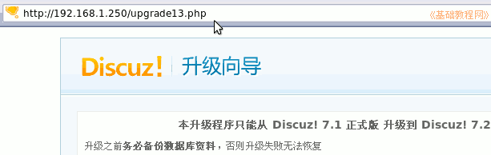
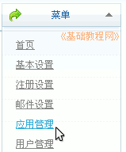
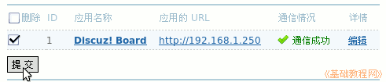
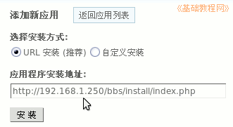
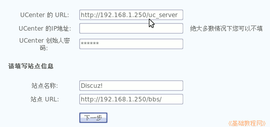

Discuz!论坛安装教程
作者：TeliuTe 来源：基础教程网
当有新版本出来 时，可以在原来的基础上升级，升级前做好备份，下面我们来看一个练习；
1、升级安装到7.2
1）打开下载的7.2安装包，先看里面的readme文件夹里的，readme和upgrade两个文件，掌握升级的方法；
2）解压upload文件夹，复制除了 install/文件夹和config.inc.php以外的所有内容，覆盖到论坛源文件，提前做好原论坛的备份；
3）复制 utilities/ 文件夹中对应的升级文件，这里是upgrade13.php，复制到论坛根目录；
4）在浏览器地址栏中，用地址访问升级文件，这里是 upgrade13.php

5）点“开始升级”后自动运行直到完成，然后重新登录，更新缓存，删除upgrade13.php升级文件；
2、另一种方法（供学习）
1）备份原来的数据，登录论坛再进入系统设置(或管理中心)，再进入UCenter；
2）在UC中心点右边的“菜单－应用管理”，出来一个列表；

3）打勾选中里面的 Discuz! Board，点“提交”删除，这样就把原来的论坛断开了；

4）到论坛文件夹里，除了uc_server 文件夹外，把原来的论坛文件夹都删除，
然后新建bbs文件夹，复制7.2的论坛文件夹过来，同样设置好权限，使用7.1的UCenter安装7.2；
5）在应用管理里，点“添加应用”，出来的对话框里面输入安装地址，UC中心路径会自动输好，

6）也可以在地址栏输入安装地址，需要自己输入UC中心的地址和密码；

本节学习了升级论坛的基本方法，如果你成功地完成了练习，请继续学习下一课内容；
本教程由86团学校TeliuTe制作|著作权所有
基础教程网：http://teliute.org/
美丽的校园……
转载和引用本站内容，请保留版权信息和本站链接。